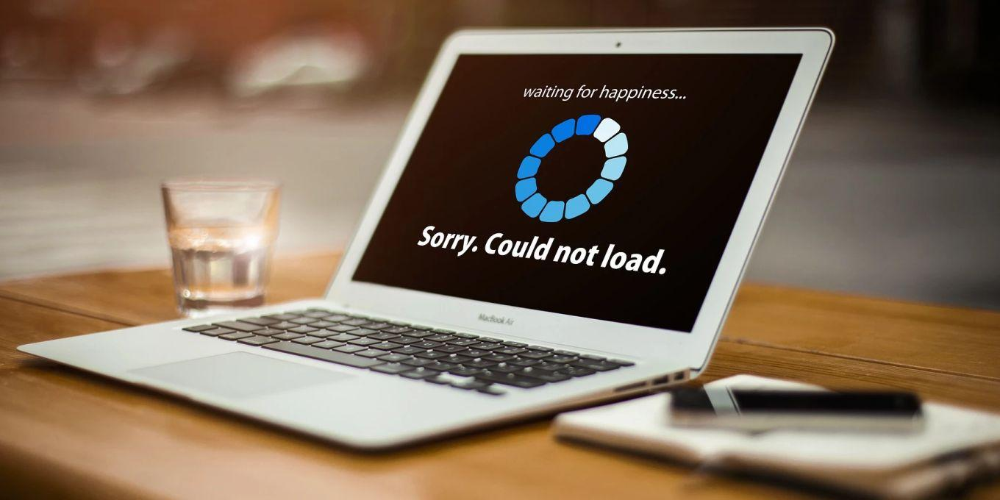
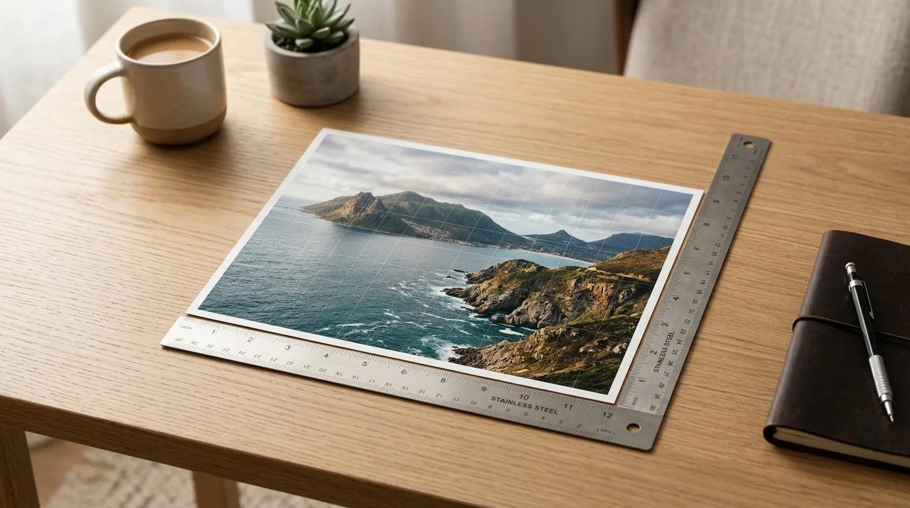
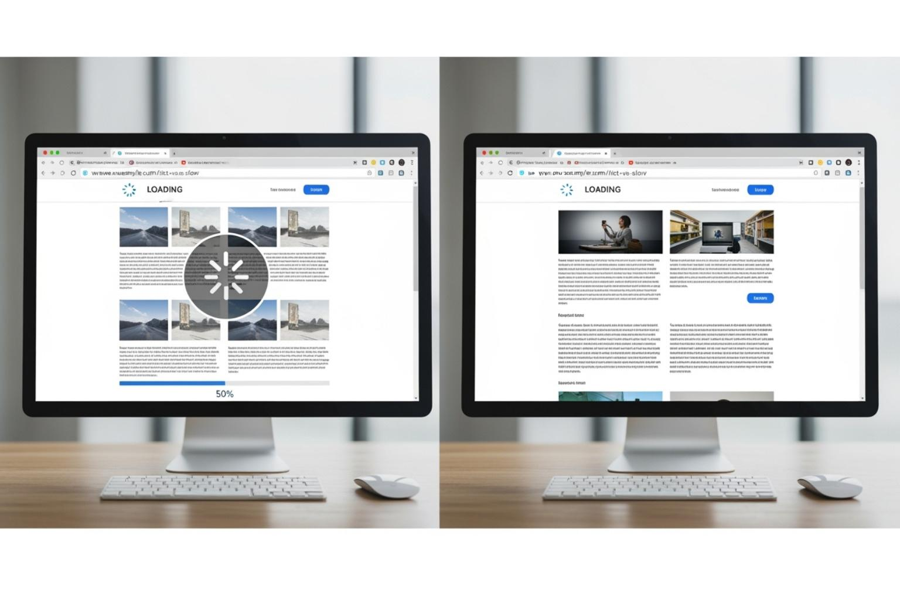
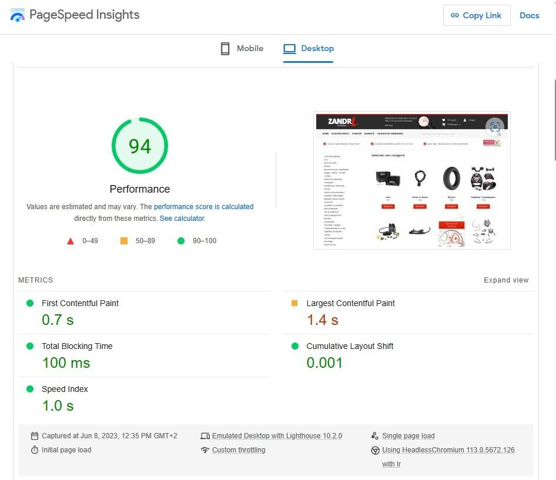

You compressed your image. It’s only 80 KB. You uploaded it, opened your page, and it still feels slow.
Frustrating, right? The cause is usually that KB size is only one part of the story. This guide explains why a small image size can still go with a website that loads slowly, and how to find the real problem in a few minutes.
The Short Answer
File size measures how much data the browser downloads. It doesn’t measure everything else the browser has to do with that image. A small file can still slow a page down when:
- The pixel dimensions are much larger than the space it’s displayed in
- The format isn’t the best fit for the image
- The image loads late, or is told to wait (lazy loading, background images, scripts)
- You have many images, and the small sizes add up
- The real delay is somewhere else, like the server, caching, or scripts
File Size, Dimensions, and Display Size Are Three Different Things
Most people only check the first one.
| Term | What it means | Example |
|---|---|---|
| File size | Data stored on disk and downloaded | 85 KB |
| Pixel dimensions | Width × height of the image itself | 4000 × 3000 px |
| Displayed size | Space the image takes on the page | 400 × 300 px |
An image can be tiny in KB and still huge in pixels. Heavy compression can squeeze a very large image into a small file. The browser then has to deal with all those pixels anyway.

Reason 1: The Pixel Dimensions Are Too Big
Here’s the part many guides skip. To show an image, the browser decompresses it into raw pixel data. In a common setup, each pixel takes about 4 bytes (red, green, blue, and transparency). So the memory needed depends on the pixel count, not the KB size.
A rough calculation:
| Image dimensions | Pixels | Approx. decoded size |
|---|---|---|
| 800 × 600 | 480,000 | ~1.9 MB |
| 1600 × 1200 | 1,920,000 | ~7.7 MB |
| 4000 × 3000 | 12,000,000 | ~48 MB |
These are rough estimates for a standard 4-bytes-per-pixel bitmap. Actual browser behavior can vary.
So a heavily compressed 4000 × 3000 photo might download as a small file, yet still be expensive to decode and hold in memory. This hits phones and older devices hardest.
The fix: Resize the image to the size you actually need, then compress it. Order matters. Resize first.
Reason 2: The Image Is Displayed Much Smaller Than It Really Is
Say your blog layout shows an image 600 px wide, but you uploaded a 3000 px photo. The browser downloads the large version and scales it down visually. The page looks fine, and nobody notices until it’s slow.
A useful rule of thumb: Upload close to the largest size the image will ever be displayed at. Sharp screens (often called retina or high-DPR displays) may use up to 2× that size, but rarely more. Going 5× or 10× bigger only adds weight.
Reason 3: The Format Isn’t the Best Fit
Format changes how efficiently the same picture is stored.
| Format | Typically good for | Watch out for |
|---|---|---|
| JPG | Photos | Artifacts around sharp text and edges |
| PNG | Logos, screenshots, transparency | Large files for detailed photos |
| WebP | Photos and graphics on the web | Check your platform’s support |
| AVIF | Photos at small sizes | Newer; check support and encoding time |
Modern formats like WebP and AVIF can often produce smaller files than JPG or PNG at similar visual quality, but results depend on the image and settings. Test with your own files instead of assuming.
Using PNG for a photograph is a classic mistake. A photo saved as PNG can be far larger than it needs to be.
Reason 4: Loading Behavior Matters More Than You Think
Two pages can download the same images and feel completely different. Why? Timing.
- Lazy loading the wrong image. Lazy loading tells the browser to wait on images until they’re near the screen. That’s great for images far down the page. But if you lazy load your main top image (the hero image), you delay the part visitors see first.
- Late discovery. Browsers find images in the HTML quickly. Images set as CSS backgrounds, or added later by JavaScript or sliders, are found later, so they start loading later.
- No priority for the important image. Modern browsers let you hint that an image is important. Check current browser support and your platform’s documentation before using these hints.
- Missing width and height. If the page doesn’t know the image’s space in advance, content jumps around once it loads. It feels slow and unstable even when the download itself was quick.

Reason 5: Small Images Add Up
Thirty images at 90 KB each is still roughly 2.7 MB. Sliders, galleries, product grids, and icons can quietly become the heaviest part of a page.
Ask yourself:
- Do all these images need to load right away?
- Can similar images share a single file, or can some be removed?
- Are thumbnails really thumbnails, or full-size images shrunk by CSS?
Reason 6: The Image Isn’t the Real Problem
Sometimes images take the blame for something else. Common culprits:
- Slow server response
- Missing browser caching, so visitors re-download everything
- Heavy third-party scripts (chat widgets, trackers, ad code)
- Large fonts or render-blocking CSS and JavaScript
- Too many plugins on WordPress
If your images are properly sized and the page is still slow, look at these next.
How to Diagnose It: A Practical Checklist
You don’t need special tools. Your browser has them built in.
- Open your page in Chrome (or another browser with developer tools).
- Open DevTools (right-click the page, choose Inspect), then go to the Network tab.
- Reload the page and filter by Img.
- Sort by size or time. Note which images are largest and which start late.
- Compare dimensions. Hover over an image in the list or check the Elements panel to compare its natural size with its displayed size.
- Run a speed test. Tools like Lighthouse or PageSpeed Insights will flag oversized or poorly loaded images.
- Test again after each change so you know what actually helped.
Symptom → Likely Cause → Fix
| What you see | Likely cause | What to do |
|---|---|---|
| Small KB, but page feels heavy on phones | Huge pixel dimensions | Resize to display size, then compress |
| Top image appears late | Hero image is lazy loaded or found late | Load it normally, and prioritize it |
| Content jumps as images load | Missing width and height | Set dimensions on the image |
| Many images, long total load | Too many images loading at once | Lazy load below-the-fold images only |
| Photo saved as PNG is large | Wrong format | Try JPG or WebP |
| Images fine, page still slow | Server, scripts, or caching | Check hosting, caching, and plugins |
Test It Yourself
Don’t just trust our word. Run a simple test:
- Take one photo.
- Save it at different dimensions (for example, 4000 px, 2000 px, 1200 px, and 800 px wide).
- Save each in two formats (for example, JPG and WebP) at a similar visual quality.
- Note the file size of each.
- Place each on a test page and measure page speed separately, several times, then take the average. Speed results can vary between runs, so one test isn’t enough.

Fill in your own results:
| Width | Format | File size | Page load result | Looks OK? |
|---|---|---|---|---|
| 4000 px | JPG | |||
| 2000 px | JPG | |||
| 1200 px | JPG | |||
| 800 px | JPG | |||
| 1200 px | WebP | |||
| 800 px | WebP |
You’ll likely see that dimensions matter alongside KB size. Your own numbers will tell you how much.
How to Fix It: Best Practices
- Resize first, compress second. Match the image to where it’s displayed.
- Choose the right format. JPG or WebP for photos, PNG for logos and transparency.
- Serve sizes that fit the screen. Responsive images let the browser pick a suitable version.
- Lazy load below-the-fold images only. Never delay the main top image.
- Set width and height so the layout doesn’t jump.
- Check caching and hosting if images are fine but the page isn’t.
- Re-test after every change.
Common Mistakes
- Compressing a huge image instead of resizing it
- Lazy loading every image, including the hero
- Using PNG for photos
- Uploading the original camera photo
- Trusting KB size alone
- Testing speed once and calling it done
Quick Summary
- KB size is only part of image performance.
- Pixel dimensions affect decoding and memory, even for small files.
- Resize to the display size, then compress.
- Format and loading behavior change how fast an image appears.
- Many small images add up.
- Diagnose with DevTools and test again after each change.
Frequently asked questions
Does image resolution affect page speed even if the KB size is small?
What is the best image size for a website?
Should I lazy load every image?
Is WebP always better than JPG?
Why is my website slow even after compressing images?
How do I find which image is slowing my page?
Do I need to resize before compressing?
Conclusion
A small KB number can hide a bigger problem. Dimensions, format, and loading behavior decide how an image really performs. Check them one by one, fix the biggest issue first, and test again.
Ready to try? Use the QuickToolsPK Image Resizer to match your image to its display size, then run it through the Image Compressor.